The following pictures show n unit squares covering the largest known square (of area A). For the n not pictured, the trivial covering (with no tilted squares) is the best known.
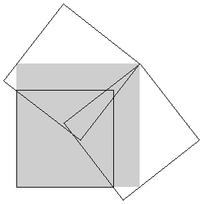 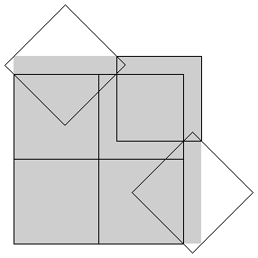 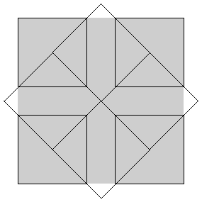
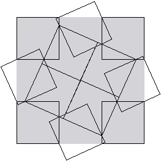 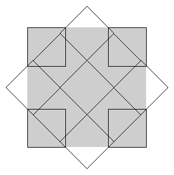 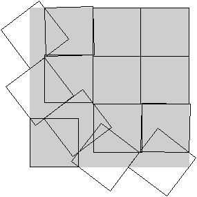
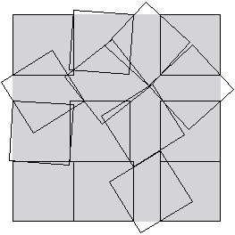 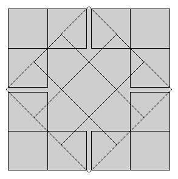 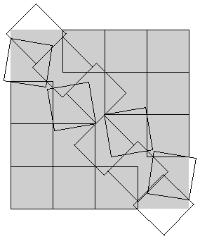
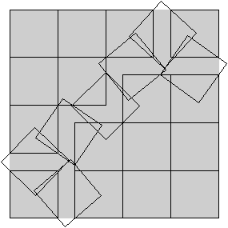 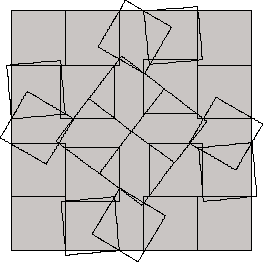 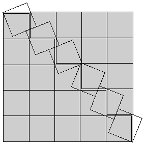
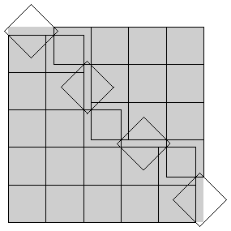 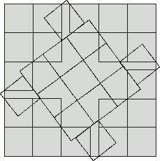 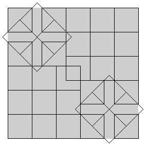
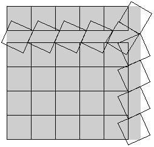 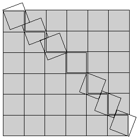 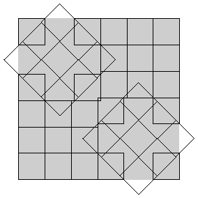
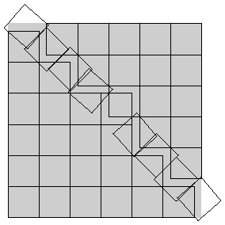
3.
7.
8.
A = 1/2 + √5/2 = 1.61803+
Found by Dudeney
in 1931.
A = 11/4 + 3/√2 = 4.87132+
Found by Trevor Green
in September 2000.
A = 3 + 2√2 = 5.82842+
Found by Trevor Green
in September 2000.
12.
13.
14.
A = 9.08195+
Found by Ryan Chi
in September 2026.
A = 11/2 + 3√2 = 9.74264+
Found by David Paterson
in July 2002.
A = 10.860+
Found by Michael Kearney
in July 2002.
15.
21.
22.
A = 11.84721+
Found by Ryan Chi
in September 2026.
A = 17/2 + 6√2 = 16.98528+
Found by David Paterson
in July 2002.
A = 17.821+
Found by David Cantrell
in August 2002.
23.
24.
31.
A = 19.001+
Found by David Cantrell
in July 2002.
A = 20.008+
Found by Maurizio Moranndi
in October 2010.
A = 25.527+
Found by David Paterson
in September 2002.
32.
33.
34.
A = 83/4 + 9/√2 = 27.11396+
Found by David Paterson
in September 2002.
A = 27.988+
Found by Maurizio Morandi
in October 2010.
A = 18 + 8√2 = 29.31370+
Found by David Paterson
in September 2002.
35.
43.
44.
A = 30.247+
Found by Maurizio Morandi
in October 2010.
A = 36.608+
Found by David Paterson
in September 2002.
A = 41/2 + 12√2 = 37.47056+
Found by David Paterson
in September 2002.
45.
A = 39.042+
Found by David Paterson
in September 2002.